5 Building and Assessing Models
Learning Outcomes
Conceptual Learning Outcomes
24. State the assumptions of the normal error regression model and check their validity using residual plots, qq plots, and other information.
25. Interpret regression coefficients in models involving log transformations.
26. Calculate predicted values for models involving log transformations.
27. Interpret regression coefficient estimates on models with interaction terms.
28. Calculate predicted values for models with interaction terms.
29. Draw conclusions about models involving polynomial terms and interactions based on graphical representations of data.
30. Identify instances of confounding and Simpson’s paradox and draw conclusions in these situations.
31. Explain how multicollinearity impacts predictions and confidence/prediction intervals.
32. Determine whether it is appropriate to add terms to a model using information such as \(R^2\), F-statistic, residual plots, correlation, and other visual representations.
Computational Learning Outcomes
I. Build regression models involving nonlinear terms and interactions in R.
5.1 Regression Assumptions Checks
We’ve seen that tests and intervals based on the normal error regression model depend on four assumptions. If these assumptions are not reasonable then the tests and intervals may not be reliable.
The statement \(Y_i = \beta_0 + \beta_1X_{i1}+ \ldots + \beta_pX_{ip} + \epsilon_i\), with \(\epsilon_i\sim\mathcal{N}(0,\sigma)\) implies the following:
Linearity: the expected value of \(Y\) is a linear function of \(X_1, X_2, \ldots, X_p\). (This assumption is only relevant for models including at least one quantitative explanatory variable.)
Normality: Given the values of \(X_1, X_2, \ldots, X_p\), \(Y\) follows a normal distribution.
Constant Variance: Regardless of the values of \(X_1, X_2, \ldots, X_p\), the variance (or standard deviation) in the normal distribution for \(Y\) is the same.
Independence: The response value for each observation is not affected by any of the other observations (expect due to explanatory variables included in the model).
Illustration of Model Assumptions
We know that these assumptions held true in the ice cream example, because we generated the data in a way that was consistent with these.
In practice, we will have only the data, without knowing the exact mechanism that produced it. We should only rely on the t-distribution based p-values and confidence intervals in the R output if these appear to be reasonable assumptions.
Of course, these assumptions will almost never be truly satisfied, but they should at least be a reasonable approximation if we are to draw meaningful conclusions.
5.1.1 Residual Diagnostic Plots
The following plots are useful when assessing the appropriateness of the normal error regression model.
Scatterplot of residuals against predicted values
Histogram of standardized residuals
- heavy skewness indicates a problem with normality assumption
Normal quantile plot
- severe departures from diagonal line indicate problem with normality assumption
Residual vs Predicted Plots
A residual vs predicted plot is useful for detecting issues with the linearity or constant variance assumption.
- curvature indicates a problem with linearity assumption
- “funnel” or “megaphone” shape indicates problem with constant variance assumption

If there is only one explanatory variable, plotting the residuals against that variable reveals the same information as a residual vs predicted plot.
Histogram of Residuals
A histogram of the residuals is useful for assessing the normality assumption.
- Severe skewness indicates violation of normality assumption

Normal Quantile-Quantile (QQ) Plot
Sometimes histograms can be inconclusive, especially when sample size is smaller.
A Normal quantile-quantile plot displays quantiles of the residuals against the expected quantiles of a normal distribution.
- Severe departures from diagonal line indicate a problem with normality assumption.

Checking Model Assumptions - Independence
The independence assumption is often difficult to assess through plots, because there are many different ways in which independence could be violation. One common type of independence violation is periodic (or seasonal) behavior. For example if a company’s sales peak in the same months every year, this would be seasonal behavior and would violate the independence assumption. If the data are listed in the order they are taken, we can plot residuals against index number (row of the dataset) and check whether there are any patterns.

Unlike with the other assumptions, checking the residual vs. index plot does not catch all types of independence violations. First, it is only useful if the data are listed by date (or location) they occurred. The independence assumption can also be violated in other ways that a residual vs index plot will not catch.
Anything that causes some observations to be more alike than others for reasons other than the explanatory variables in the model would cause a violation of the independence assumption.
For example:
- People in the study who are related.
- Some plants grown in the same greenhouse and others in different greenhouses.
- Some observations taken in same time period and others at different times.
It is important to use your knowledge about the data and how it was collected, in addition to plots when assessing the independence assumption.
When the independence assumption is violated we need to use more advanced kinds of statistical models, beyond the ordinary regression model, in order to properly analyze the data.
Summary of Checks for Model Assumptions
| Model assumption | How to detect violation |
|---|---|
| Linearity | Curvature in residual plot |
| Constant Variance | Funnel shape in residual plot |
| Normality | Skewness in histogram of residuals or departure from diag. line in QQ plot |
| Independence | Residual vs index plot and info about data collection |
5.1.2 Example: N v S Lakes
Recall our sample of 53 Florida Lakes, 33 in the north, and 20 in the south.
\(\text{Mercury}_i = \beta_0 + \beta_1\times{\text{South}_i} + \epsilon_i\), where \(\epsilon_i\sim\mathcal{N}(0, \sigma)\).
When we use the normal error regression model, we are assuming the following:
Linearity: there is an expected mercury concentration for lakes in North Florida, and another for lakes in South Florida.
Normality: mercury concentrations of individual lakes in the north are normally distributed, and so are mercury concentrations in the south. These normal distributions might have different means.
Constant Variance: the normal distribution for mercury concentrations in North Florida has the same standard deviation as the normal distribution for mercury concentrations in South Florida
Independence: no two lakes are any more alike than any others, except for being in the north or south, which we account for in the model. We might have concerns about this, do to some lakes being geographically closer to each other than others.
We should only use the p-values and confidence intervals provided by R, which depend on the t-distribution approximation, if we believe these assumptions are reasonable.
The resid_panel function in the ggResidpanel package produces the four plots shown above.
resid_panel(model = M_Lakes_merc_loc)
Notice that we see two lines of predicted values and residuals. This makes sense since all lakes in North Florida will have the same predicted value, as will all lakes in Southern Florida.
There appears to be a little more variability in residuals for Southern Florida (on the right), than Northern Florida, causing some concern about the constant variance assumption.
Overall, though, the assumptions seem mostly reasonable.
We shouldn’t be concerned about using theory-based hypothesis tests or confidence intervals for the mean mercury level or difference in mean mercury levels. There might be some concern that prediction intervals could be either too wide or too narrow, but this is not a major concern, since the constant variance assumption is not severe.
5.1.3 Example: pH Model
Recall the regression line estimating the relationship between a lake’s mercury level and pH.
\(\text{Mercury}_i = \beta_0 + \beta_1\times\text{pH}_i + \epsilon_i\), where \(\epsilon_i\sim\mathcal{N}(0, \sigma)\).
The model assumes:
Linearity: the expected mercury level of a lake is a linear function of pH.
Normality: for any given pH, the mercury levels of lakes with that pH follow a normal distribution. For example, mercury levels for lakes with pH of 6 is are normally distributed, and mercury levels for lakes with pH of 9 are normally distributed, though these normal distributions may have different means.
Constant Variance: the variance (or standard deviation) in the normal distribution for mercury level is the same for each pH. For example, there is the same amount of variability associated with lakes with pH level 6, as pH level 8.
Independence: no two lakes are any more alike than any others, except with respect to pH, which is accounted for in the model. This may not be a reasonable assumption, but it’s unclear what the effects of such a violation would be.
We should only use the p-values and confidence intervals provided by R, which depend on the t-distribution approximation, if we believe these assumptions are reasonable.
The plots for checking these assumptions are shown below.
resid_panel(model = M_Lakes_merc_pH, smoother=TRUE)
The residual vs predicted plot does not show any linear trend, and variability appears to be about the same for low predicted values as for high ones. Thus, the linearity and constant variance assumptions appear reasonable.
The histogram shows some right-skewness, and the right-most points on the normal-qq plot are above the line, indicating a possible concern with the normality assumption. There is some evidence of right-skewness, which might impact the appropriateness of the normal error regression model.
We saw that the confidence interval and p-value associated with \(b_1\) when we used theory-based formulas was similar to those we obtained using simulation. Normality violations can, but don’t always have a heavy impact on intervals associated with model coefficients. They do, however, lead to unreliable intervals for an expected response (i.e. the average mercury level in lakes with a pH of 7), and cause prediction intervals to be especially unreliable.
5.1.4 Example: House Prices
Recall the model for estimating price of a house, using size, waterfront status, and an interaction term.
\(\text{Price}_i = \beta_0 + \beta_1\text{Sq.Ft.}_{i}+ \beta_2\text{Waterfront}_{i} + \epsilon_i\), where \(\epsilon_i\sim\mathcal{N}(0,\sigma)\).
The model assumes:
Linearity: The expected price of a house is a linear function of its size. Waterfront houses may be priced higher or lower than non-waterfront houses, but both types increase at the same rate with respect to size.
Normality: Prices of houses of a given size and waterfront status are normally distributed.
Constant Variance: The variance (or standard deviation) in the normal distribution for prices is the same for all sizes and waterfront statuses.
Independence: No two houses are any more alike than any others, except with respect to size and waterfront status.
We should only use the p-values and confidence intervals provided by R, which depend on the t-distribution approximation, if we believe these assumptions are reasonable.
Several reasons come to mind that might cause us to doubt the validity of these assumptions, but let’s investigate them empirically, using our data on 200 houses in the dataset.
The plots for checking these assumptions are shown below.
resid_panel(model = M_House_price_sqft_wf, smoother=TRUE)
The plots reveal several concerns. In the residual plot, there is some sign of a nonlinear trend, though this is not too severe. Of greater concern is the megaphone shape, as we see much more vertical spread in residuals for houses with higher predicted prices on the right side of the graph than for ones with lower predicted prices on the left.
The Q-Q plot also raises concerns about normality. There is a tail above the diagonal line on the right side of the plot, and a smaller one below the line on the left side. These indicate that the most expensive houses tend to be more expensive than we would expect using a normal model, and the least expensive houses tend to be less expensive than expected. It’s not unusual to have a few outliers deviate from the diagonal line on either end of the QQ-plot. The histogram of residuals does generally show a symmetric, bell-shaped, pattern and most of the points do follow the line closely so the normality concern may not be too serious.
The index plot does not raise any concerns, but we might still have some concerns about independence. For example, houses in the same neighborhood might be more similarly priced than houses in different neighborhoods.
5.1.5 Impact of Model Assumption Violations
In this chapter, we’ve studied the normal error regression model and its underlying assumptions. We’ve seen that when these assumptions are realistic, we can use distributions derived from probability theory, such as t and F distributions to approximate sampling distributions, in place of the simulation-based methods seen in Chapters 3 and 4.
Of course, real data don’t come exactly from processes like the fictional ice cream dispenser described in Section 4.1, so it’s really a question of whether this model is a realistic approximation (or simplification) of the true mechanism that led to the data we observe. We can use diagnostics like residual and Normal-QQ plots, as well as our intuition and background knowledge to assess whether the normal error regression model is a reasonable approximation.
The p-values provided by the lm summary output, and anova commands, and the and intervals produced by the confint, and predict command, as well as many other R commands, depend on the assumptions of the normal error regression model, and should only be used when these assumptions are reasonable.
In situations where some model assumptions appear to be violated, we might be okay using certain tests/intervals, but not others. In general, we should proceed with caution in these situations.
The table below provides guidance on the potential impact of model assumption violation on predicted values, confidence intervals, and prediction intervals.
| Model assumption Violated | Predicted Values | Confidence Intervals | Prediction Intervals |
|---|---|---|---|
| Linearity | Unreliable | Unreliable | Unreliable |
| Constant Variance | Reliable | Somewhat unreliable - Some too wide, others too narrow | Very unreliable - Some too wide, others too narrow |
| Normality | Reliable | Possibly unreliable - might be symmetric when they shouldn’t be. Might be okay when skewness isn’t bad and sample size is large. | Very unreliable - will be symmetric when they shouldn’t be |
| Independence | might be reliable | unreliable - either too wide or too narrow | unreliable - either too wide or too narrow |
When model assumptions are a concern, consider a using a transformation of the data, a more advanced model, or a more flexible technique, such as a nonparametric approach or statistical machine learning algorithm.
5.2 Transformations
When there are violations of model assumptions, we can sometimes correct for these by modeling a a function of the response variable, rather than the response variable itself. When the histogram of residuals and normal qq plot show signs of right-skewness, modeling a logarithm of the response variable is often helpful.
5.2.1 Example: Modeling Car Prices
We’ll work with data on a set of 110 new cars, released in 2020. The data come from the LockData5 package in R.
library(Lock5Data)
data(Cars2020)
Cars2020 <- Cars2020 |> rename(Price = LowPrice) |>
select(Make, Model, Price, Acc060, everything() ) |> select(-HighPrice)
head(Cars2020) Make Model Price Acc060 Type CityMPG HwyMPG Seating Drive Acc030 QtrMile
1 Acura MDX 44.4 6.8 SUV 14 31 7 AWD 2.8 15.3
2 Acura RLX 54.9 6.5 Sedan 15 36 5 AWD 2.7 15.0
3 Audi A3 33.3 8.3 Sedan 18 40 5 AWD 3.2 16.4
4 Audi A4 37.4 6.3 Sporty 18 40 5 AWD 2.7 14.9
5 Audi A6 54.9 6.8 Sedan 17 39 5 AWD 2.8 15.3
6 Audi A8 83.8 6.1 Wagon 20 27 5 AWD 2.4 14.5
Braking FuelCap Length Width Height Wheelbase UTurn Weight Size
1 135 19.5 196 77 67 111 40 4200 Midsized
2 128 18.5 198 74 58 112 40 3930 Midsized
3 124 13.2 175 70 56 104 37 3135 Small
4 135 15.3 186 73 56 111 40 3630 Small
5 129 19.3 195 74 57 115 38 4015 Midsized
6 133 21.7 209 77 59 123 43 4810 LargeWe’ll begin by examining the relationship between price (in thousands) and the amount of time it takes a car to accelerate from 0 to 60 mph (Acc060).
ggplot(data = Cars2020, aes(x=Acc060, y=Price)) + geom_point() +
geom_text(data = Cars2020 |> filter(Price > 80 | Acc060 < 5),
aes(label=Model), nudge_y=3) + geom_text(data = Cars2020 |>
filter(Model=="Spark"), aes(label=Model), nudge_y=3, nudge_x=-0.3) +
geom_text(data = Cars2020 |> filter(Model=="Mirage"), aes(label=Model),
nudge_y=3, nudge_x=0.3) + stat_smooth(method="lm", se=FALSE) +
theme_bw() 
We’ll look at the assumptions associated with the model for predicting car price, using acceleration time as the explanatory variable.
We fit a model of the form
\[ \text{Price} = \beta_0 +\beta_1 \times\text{Acc060} + \epsilon_i, \text{where } \epsilon_i\sim\mathcal{N}(0, \sigma) \]
We fit the model in R and display the summary below.
M_Cars_price_acc060 <- lm(data=Cars2020, Price~Acc060)
summary(M_Cars_price_acc060)
Call:
lm(formula = Price ~ Acc060, data = Cars2020)
Residuals:
Min 1Q Median 3Q Max
-33.895 -7.410 -1.172 4.947 52.280
Coefficients:
Estimate Std. Error t value Pr(>|t|)
(Intercept) 90.0583 6.2721 14.359 < 0.0000000000000002 ***
Acc060 -7.0826 0.7851 -9.021 0.0000000000000078 ***
---
Signif. codes: 0 '***' 0.001 '**' 0.01 '*' 0.05 '.' 0.1 ' ' 1
Residual standard error: 12.85 on 108 degrees of freedom
Multiple R-squared: 0.4297, Adjusted R-squared: 0.4244
F-statistic: 81.37 on 1 and 108 DF, p-value: 0.000000000000007802The most relevant estimate here is \(b_1=\)-7.08, which tells us that for each additional second it takes to accelerate from 0 to 60 mph, we estimate price of a car to decrease by about 7 thousand dollars. A confidence interval for this expected decrease is shown below.
confint(M_Cars_price_acc060, level=0.95, parm="Acc060") 2.5 % 97.5 %
Acc060 -8.638874 -5.526288Before we draw conclusions from this model, however, we should check the assumptions associated with it. The assumptions are:
Linearity: There is a linear relationship between the price of a car and the amount of time it takes to accelerate from 0 to 60 mph.
Normality: For a given acceleration time, prices of cars are normally distributed.
Constant Variance: The amount of variability in car prices is the same, for all acceleration times.
Independence: No two car prices are any more alike than any others for any reason other than acceleration time.
Diagnostic plots are shown below.
resid_panel(M_Cars_price_acc060, smoother=TRUE)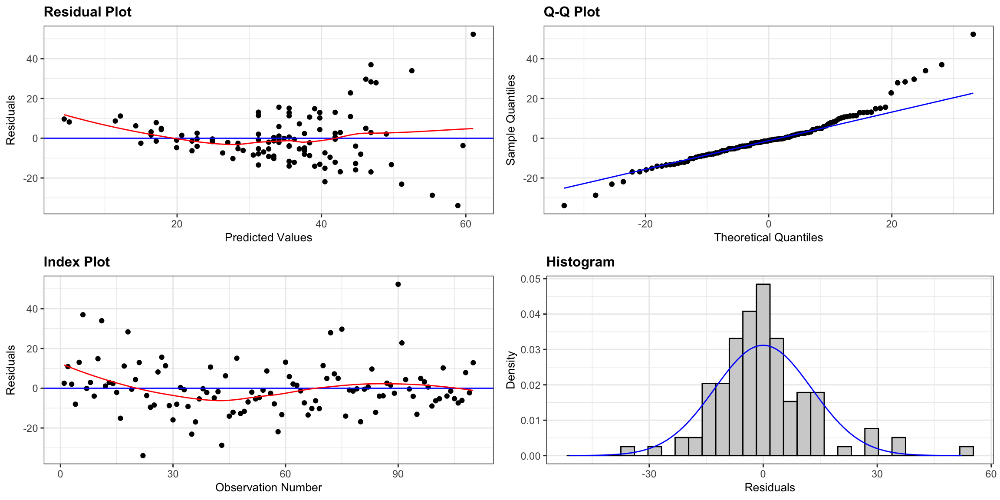
There is a funnel-shape in the residual plot, indicating a concern about the constant variance assumption. There appears to be more variability in prices for more expensive cars than for cheaper cars. There is also some concern about the normality assumption, as the histogram and QQ plot indicate slight right-skewness, though it is not too severe.
5.2.2 Log Transformation
When residual plots yield model inadequacy, we might try to correct these by applying a transformation to the response variable.
When working a nonnegative, right-skewed response variable, it is often helpful to work with the logarithm of the response variable.
Note: In R, log() denotes the natural (base e) logarithm, often denoted ln(). We can actually use any logarithm, but the natural logarithm is commonly used.
The log(Price) for the first 6 rows of the data are shown below.
Cars2020 <- Cars2020 |> mutate(LogPrice = log(Price))
Cars2020 |> select(Model, Make, Price, LogPrice, Acc060) |> head() Model Make Price LogPrice Acc060
1 MDX Acura 44.4 3.793239 6.8
2 RLX Acura 54.9 4.005513 6.5
3 A3 Audi 33.3 3.505557 8.3
4 A4 Audi 37.4 3.621671 6.3
5 A6 Audi 54.9 4.005513 6.8
6 A8 Audi 83.8 4.428433 6.1We’ll use the model:
\[ \text{Log Price} = \beta_0 + \beta_1\times \text{Acc060} + \epsilon_i , \text{ where } \epsilon_i\sim\mathcal{N}(0, \sigma) \]
The plot shows log(price) on the y-axis. We see that the relationship appears more linear than when we plot price itself.
ggplot(data=Cars2020, aes(x=Acc060, y=log(Price))) + geom_point() +
xlab("Acceleration Time") + ylab("Log of Price") +
ggtitle("Acceleration Time and Log Price") +
stat_smooth(method="lm", se=FALSE) + theme_bw()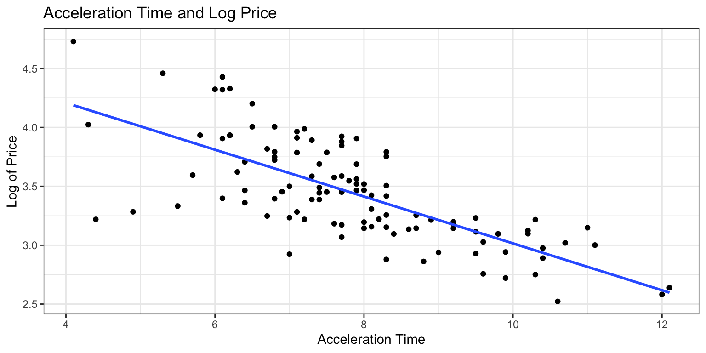
We fit the model using log(Price) as the response variable.
M_Cars_logprice_acc060 <- lm(data=Cars2020, log(Price) ~ Acc060)
summary(M_Cars_logprice_acc060)
Call:
lm(formula = log(Price) ~ Acc060, data = Cars2020)
Residuals:
Min 1Q Median 3Q Max
-0.90992 -0.19686 0.00148 0.15566 0.63774
Coefficients:
Estimate Std. Error t value Pr(>|t|)
(Intercept) 5.00390 0.14547 34.40 <0.0000000000000002 ***
Acc060 -0.19889 0.01821 -10.92 <0.0000000000000002 ***
---
Signif. codes: 0 '***' 0.001 '**' 0.01 '*' 0.05 '.' 0.1 ' ' 1
Residual standard error: 0.298 on 108 degrees of freedom
Multiple R-squared: 0.5248, Adjusted R-squared: 0.5204
F-statistic: 119.3 on 1 and 108 DF, p-value: < 0.00000000000000022Before interpreting the coefficients, we’ll check the residual plots for the log model.
Assumption Check for Model on Log Price
resid_panel(M_Cars_logprice_acc060, smoother=TRUE)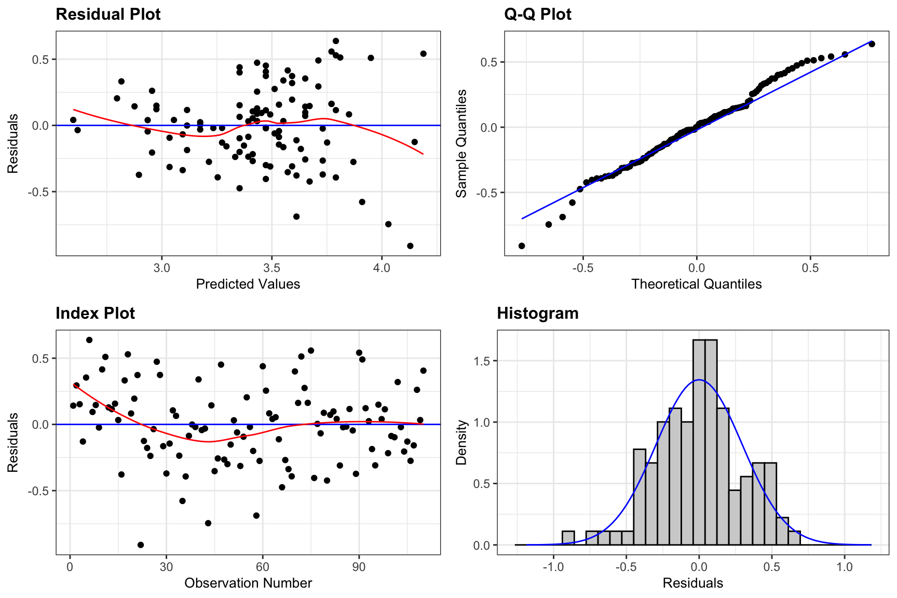
There is still some concern about constant variance, though perhaps not as much as before. The normality assumption appears more reasonable.
We’ll proceed, noting that the slight concern about constant variance might raise questions about confidence intervals for an expected response, and especially prediction intervals.
5.2.3 Inference for Log Model
The estimated regression equation is:
\[ \begin{aligned} \widehat{\text{LogPrice}} & = 5.0039 + -0.1989 \times \text{Acc060} \end{aligned} \] Thus,
\[ \begin{aligned} \widehat{\text{Price}} & = e^{5.0039 + -0.1989 \times \text{Acc060}} \end{aligned} \]
Predicted price for car that takes 7 seconds to accelerate:
\[ \begin{aligned} \widehat{\text{Price}} & = e^{5.0039 + -0.1989 \times 7} \end{aligned} \]
Predicted price for car that takes 10 seconds to accelerate:
\[ \begin{aligned} \widehat{\text{Price}} & = e^{5.0039 + -0.1989 \times 10} \end{aligned} \]
When using the predict command, R gives predictions are for log(Price), so we need to exponentiate.
#predicted log of price
predict(M_Cars_logprice_acc060, newdata=data.frame(Acc060=c(7))) 1
3.61169 exp(predict(M_Cars_logprice_acc060, newdata=data.frame(Acc060=c(7)))) 1
37.02859 A car that accelerates from 0 to 60 mph in 7 seconds is expected to cost about 37 thousand dollars.
5.2.4 Log Model Interpretations
When we use a model with a log transformation of the response variable, our interpretations of the response variable change. Let’s look at some algebra that will help us see how to interpret the coefficients \(\beta_0\) and \(\beta_1\) in this situation.
\[ \begin{aligned} \text{Log of Expected Price} & = \beta_0 + \beta_1\times \text{Acc060}\ \text{, Thus:} \\ \text{ Expected Price} & = e^{\beta_0 + \beta_1\times \text{Acc060} } \\ & e^{\beta_0}e^{\beta_1 \times \text{Acc060}} \\ & e^{\beta_0}(e^{\beta_1})^\text{Acc060} \end{aligned} \]
We see that when \(\text{Acc060}=0\), the expected price is \(e^{\beta_0}\). So, \(e^{\beta_0}\) is theoretically the expected price of a car that can accelerate from 0 to 60 mph in no time, but this is not a meaningful interpretation.
We see that for each additional second it takes to accelerate from 0 to 60 mph, the exponent on \(e^{\beta_1}\), increases by one, meaning price is expected to multiply by an additional \(e^{\beta_1}\). For each additional second it takes a car to accelerate, price is expected to multiply by a factor of \(e^{b_1}\).
We calculate \(e^{b_0}\) and \(e^{b_1}\) in R, and interpret the estimates.
exp(M_Cars_logprice_acc060$coefficients)(Intercept) Acc060
148.9925267 0.8196429 - For each additional second in acceleration time, price is expected to multiply by a a factor of \(e^{-0.1989}\) = 0.82. Thus, each 1-second increase in acceleration time is estimated to be associated with a 18% drop in price, on average.
Confidence Interval for \(e^{\beta_1}\)
exp(confint(M_Cars_logprice_acc060, level=0.95, parm="Acc060")) 2.5 % 97.5 %
Acc060 0.7905858 0.8497679- We are 95% confident that for each additional second in acceleration time, the price of a car multiplies by a factor between 0.79 and 0.85, an estimated decrease between 15 and 21 percent.
Log Model CI for Expected Response
If we just use the predict function, we get a confidence interval for log(price).
predict(M_Cars_logprice_acc060, newdata=data.frame(Acc060=c(7)), interval="confidence") fit lwr upr
1 3.61169 3.547818 3.675563To get an interval for price itself, we exponentiate, using exp.
exp(predict(M_Cars_logprice_acc060, newdata=data.frame(Acc060=c(7)), interval="confidence")) fit lwr upr
1 37.02859 34.73743 39.47087We are 95% confident that the mean price amoung all cars that accelerate from 0 to 60 mph in 7 seconds is between \(e^{3.55 } =\) 34.7 and \(e^{3.68}=\) 39.5 thousand dollars.
Log Model Prediction Interval
predict(M_Cars_logprice_acc060, newdata=data.frame(Acc060=c(7)), interval="prediction") fit lwr upr
1 3.61169 3.017521 4.205859exp(predict(M_Cars_logprice_acc060, newdata=data.frame(Acc060=c(7)), interval="prediction")) fit lwr upr
1 37.02859 20.44056 67.07822We are 95% confident that the price for an individual car that accelerates from 0 to 60 mph in 7 seconds is between \(e^{3.02 } =\) 20.4 and \(e^{4.21}=\) 67.1 thousand dollars.
5.2.5 Model Comparisons
We’ll compare the intervals we obtain using the log transformation to those from the model without the transformation.
95% Confidence interval for average price of cars that take 7 seconds to accelerate:
Original Model:
predict(M_Cars_price_acc060, newdata=data.frame(Acc060=7), interval="confidence", level=0.95) fit lwr upr
1 40.48028 37.72628 43.23428Transformed Model:
exp(predict(M_Cars_logprice_acc060, newdata=data.frame(Acc060=c(7)), interval="confidence", level=0.95)) fit lwr upr
1 37.02859 34.73743 39.4708795% Prediction interval for price of an individual car that takes 7 seconds to accelerate:
Original Model:
predict(M_Cars_price_acc060, newdata=data.frame(Acc060=7), interval="prediction", level=0.95) fit lwr upr
1 40.48028 14.8614 66.09916Transformed Model:
exp(predict(M_Cars_logprice_acc060, newdata=data.frame(Acc060=c(7)), interval="prediction", level=0.95)) fit lwr upr
1 37.02859 20.44056 67.07822Notice that the transformed interval is not symmetric and allows for a longer “tail” on the right than the left.
5.2.6 Log Model Visualization
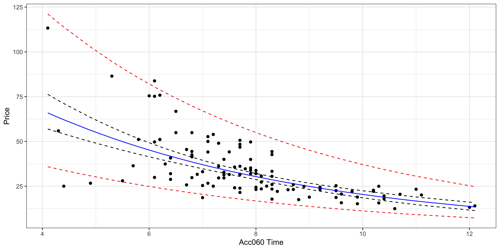
The log model suggests an nonlinear trend in price with respect to acceleration time and gives wider confidence and prediction intervals for cars that accelerate faster and tend to be more expensive. It also gives non-symmetric intervals. These results appear to be consistent with the observed data.
5.3 Polynomial Regression
5.4 Models with Interaction
5.4.1 Definition of Interaction
In Chapter 2, we modeled the price of a house in King County, Washington, using its size in square feet, and whether or not it was on the waterfront as explanatory variable. We used a multiple regression model of the form
\[ \widehat{Price} = b_0 + b_1\times\text{SqFt} + b_2\times\text{Waterfront} \]
Recall that this model assumes the slope relating price and square footage is the same (\(b_1\)) for houses on the waterfront as for houses not on the waterfront. An illustration of the model is shown below.
Plot_House_price_sqft_wf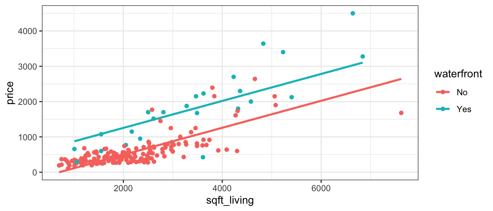
This assumption of the rate of change in price with respect to living space being the same for waterfront houses, as for non-waterfront houses might be unrealistic.
Let’s fit separate lines for waterfront and non-waterfront houses, without requiring them to have the same slope.
ggplot(data=Houses, aes(x=sqft_living, y=price, color=waterfront)) + geom_point()+stat_smooth(method="lm", se=FALSE) + theme_bw()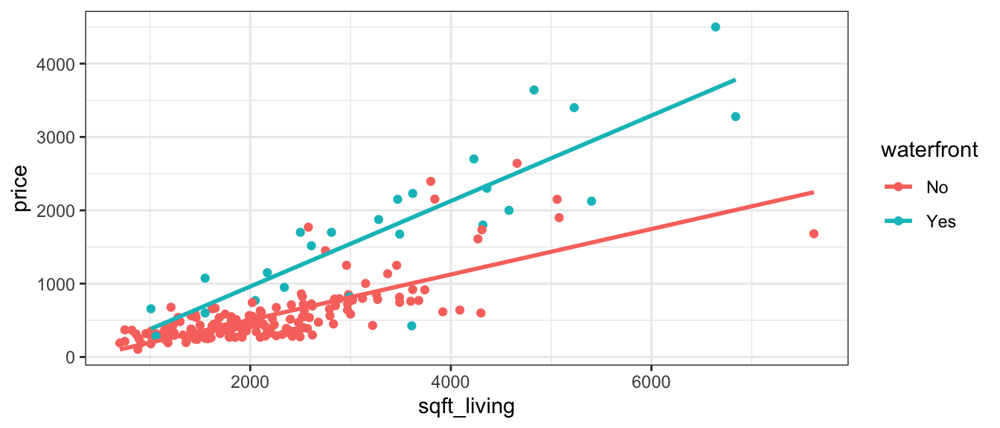
It appears that the prices of the houses on the waterfront are increasing more rapidly, with respect to square feet of living space, than the non-waterfront houses. The effect of additional square feet on the price of the house appears to depend on whether or not the house is on the waterfront. This is an example of an interaction between square footage and waterfront status.
An interaction between two explanatory variables occurs when the effect of one explanatory variable on the response depends on the other explanatory variable.
5.4.2 Interaction Term
If we want to allow for different slopes between waterfront and non-waterfront houses, we’ll need to change the mathematical equation of our model. To do that, we’ll add a coefficient \(b_3\), multiplied by the product of our two explanatory variables.
The model equation is
\[ \widehat{Price} = b_0 + b_1\times\text{Sq. Ft.} + b_2\times\text{waterfront} + b_3\times\text{Sq.Ft}\times\text{Waterfront} \]
The last term is called an interaction term.
For a house on the waterfront (\(\text{waterfront}=1\)), the equation relating price to square feet is
\[ \begin{aligned} \widehat{Price} & = b_0 + b_1\times\text{Sq. Ft.} + b_2\times\text{1} + b_3\times\text{Sq.Ft}\times\text{1} \\ & = (b_0+b_2) + (b_1+b_3)\times{\text{Sq. Ft.}} \end{aligned} \] For a house not on the waterfront (\(\text{waterfront}=0\)), the equation relating price to square feet is
\[ \begin{aligned} \widehat{Price} & = b_0 + b_1\times\text{Sq. Ft.} + b_2\times\text{0} + b_3\times\text{Sq.Ft}\times\text{0} \\ & = b_0 + b_1\times{\text{Sq. Ft}} \end{aligned} \]
The intercept is \(b_0\) for non-waterfront houses, and \(b_0 + b_2\) for waterfront houses.
The slope is \(b_1\) for non-waterfront houses, and \(b_1 + b_3\) for waterfront houses.
Thus, the model allows both the slope and intercept to differ between waterfront and non-waterfront houses.
5.4.3 Interaction Models in R
To fit an interaction model in R, use * instead of +
M_House_price_sqft_wf_int <- lm(data=Houses, price~sqft_living*waterfront)
summary(M_House_price_sqft_wf_int)
Call:
lm(formula = price ~ sqft_living * waterfront, data = Houses)
Residuals:
Min 1Q Median 3Q Max
-1474.37 -151.07 -31.29 106.77 1331.87
Coefficients:
Estimate Std. Error t value Pr(>|t|)
(Intercept) -114.37347 59.00418 -1.938 0.054
sqft_living 0.30987 0.02496 12.417 < 0.0000000000000002
waterfrontYes -90.11528 168.67011 -0.534 0.594
sqft_living:waterfrontYes 0.27292 0.04856 5.620 0.000000065
(Intercept) .
sqft_living ***
waterfrontYes
sqft_living:waterfrontYes ***
---
Signif. codes: 0 '***' 0.001 '**' 0.01 '*' 0.05 '.' 0.1 ' ' 1
Residual standard error: 322.8 on 196 degrees of freedom
Multiple R-squared: 0.7771, Adjusted R-squared: 0.7737
F-statistic: 227.7 on 3 and 196 DF, p-value: < 0.00000000000000022House_Int_b0 <- M_House_price_sqft_wf_int$coef[1] |>round(2)
House_Int_b1 <- M_House_price_sqft_wf_int$coef[2] |>round(2)
House_Int_b2 <- M_House_price_sqft_wf_int$coef[3] |>round(2)
House_Int_b3 <- M_House_price_sqft_wf_int$coef[4] |>round(2)The regression equation is
\[ \widehat{Price} = -114.37 + 0.31\times\text{Sq. Ft.} + -90.12\times\text{waterfront} + 0.27\times\text{Sq.Ft}\times\text{Waterfront} \]
For a house on the waterfront (\(\text{waterfront}=1\)), the equation is
\[ \begin{aligned} \widehat{Price} & = -114.37 + 0.31\times\text{Sq. Ft.} -90.12 \times\text{1} + 0.27\times\text{Sq.Ft}\times\text{1} \\ & = (-114.37 - -90.12) + (0.31+0.27)\times{\text{Sq. Ft.}} \\ & = -204.49 + `House_Int_b1 + House_Int_b3`\times{\text{Sq. Ft.}} \end{aligned} \]
For a house not on the waterfront (\(\text{waterfront}=0\)), the equation is
\[ \begin{aligned} \widehat{Price} & = -114.37 + 0.31\times\text{Sq. Ft.} -90.12 \times\text{0} + 0.27\times\text{Sq.Ft}\times\text{0} \\ & = -114.37 + 0.31\times{\text{Sq. Ft.}} \end{aligned} \] Interpretation
When interpreting \(b_0\) and \(b_1\), we need to state that the interpretations apply only to the “baseline” category (in this case non-waterfront houses).
In a model with interaction, it does not make sense to talk about holding one variable constant when interpreting the effect of the other, since the effect of one variable depends on the value or category of the other. Instead, we must state the value or category of one variable when interpreting the effect of the other.
Interpretations:
\(b_0\) - On average, a house with 0 square feet that is not on the waterfront is expected to cost -114.37 thousand dollars. This is not a sensible interpretation since there are no houses with 0 square feet.
\(b_1\) - For each additional square foot in size, the price of a non-waterfront house is expected to increase by 0.31 thousand dollars.
\(b_2\) - On average, the price of a waterfront house with 0 square feet is expected to be -90.12 thousand dollars less than the price of a non-waterfront house with 0 square feet. This is not a sensible interpretation in this case.
\(b_3\) - For each additional square foot in size, the price of a waterfront house is expected to increase by 0.27 thousand dollars more than a non-waterfront house.
Alternatively, we could interpret \(b_0+b_2\) and \(b_1+b_3\) together.
\(b_0 + b_2\) - On average, a house with 0 square feet that is on the waterfront is expected to cost -204.49 thousand dollars. This is not a sensible interpretation since there are no houses with 0 square feet.
\(b_1 + b_3\) - For each additional square foot in size, the price of a waterfront house is expected to increase by 0.58 thousand dollars.
Prediction
We calculate predicted prices for the following houses:
Houses[c(1,16), ] %>% select(ID, price, sqft_living, waterfront)# A tibble: 2 × 4
ID price sqft_living waterfront
<int> <dbl> <dbl> <chr>
1 90 335. 1030 No
2 2141 1700 2500 Yes \[ \widehat{Price}_1 = -114.37 + 0.31\times 1030 + -90.12\times0 + 0.27\times 1030 \times 0 = FALSE \text{ thousand dollars} \]
\[ \widehat{Price}_1 = -114.37 + 0.31\times 1030 + -90.12\times1 + 0.27\times 1030 \times 1 = 392.91 \text{ thousand dollars} \]
5.4.4 Variability Explained
We’ll calculate \(R^2\) for the model with the interaction term
summary(M_House_price_sqft_wf_int)$r.squared[1] 0.7770731summary(M_House_price_sqft_wf)$r.squared[1] 0.7411526We see that adding an interaction term improved the proportion of variability in house price explained by the model from 0.78 to 0.7411526. This is a fairly notable increase.
anova(M_House_price_sqft_wf, M_House_price_sqft_wf_int)Analysis of Variance Table
Model 1: price ~ sqft_living + waterfront
Model 2: price ~ sqft_living * waterfront
Res.Df RSS Df Sum of Sq F Pr(>F)
1 197 23720774
2 196 20429024 1 3291749 31.582 0.00000006502 ***
---
Signif. codes: 0 '***' 0.001 '**' 0.01 '*' 0.05 '.' 0.1 ' ' 15.4.5 Considerations for Using Interactions
It might be tempting to think we should always add an interaction term to a model when using two or more explanatory variables. After all, an interaction term is just another term added to the model, meaning that \(R^2\) will never go down.
Adding an interaction term is not always a good idea, though. We saw that doing so makes interpretations more complicated. Increasing the complexity of a model also increases the risk of overfitting, potentially hurting predictive performance on new data.
We should only add an interaction term if we have strong reason to believe that the rate of change in the response variable with respect to one explanatory variable really does depend on the other variable. This might come from background knowledge about the subject, or consultation with an expert in the area. It could also come from data visualization, and the increase in variability in the response variable explained when an interaction term is added to the model.
In the house price dataset, we might expect that the price of waterfront houses might increase more rapidly as they get bigger than the price of non-waterfront houses. The fact that the lines shown in the scatterplot are not close to being parallel provides further evidence of a difference in rate of increase, providing justification for the use of an interaction term in the model. Furthermore, \(R^2\) increases notably (from 0.76 to 0.85), when an interaction term is added. All of these reasons support using an interaction term in this context.
When examining a scatterplot, we should note that even if there is truly no interaction among all houses, the lines probably won’t be exactly parallel, due to random deviations among the sample of houses chosen. If the lines are reasonably close to parallel, then an interaction term is likely not needed.
We’ll look more at criteria for determining whether to add an interaction term to a model in the coming sections.
5.4.6 When to Include Interaction
ggplot(data=Cars2020, aes(x=Acc060, y=log(Price), color=Drive)) + geom_point()+stat_smooth(method="lm", se=FALSE) + theme_bw()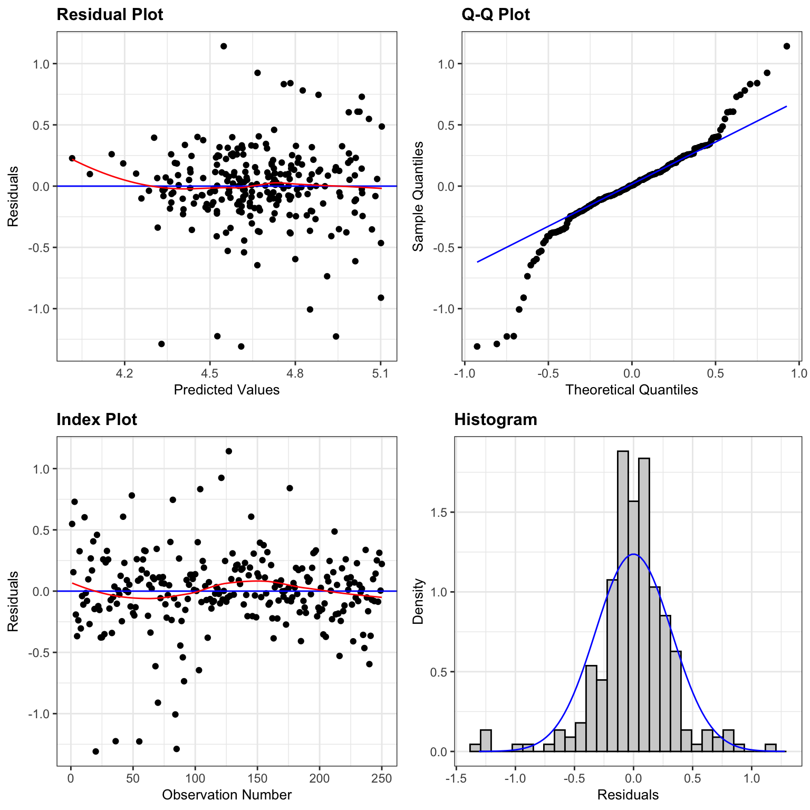
summary(lm(data=Cars2020, log(Price) ~ Acc060 * Drive))
Call:
lm(formula = log(Price) ~ Acc060 * Drive, data = Cars2020)
Residuals:
Min 1Q Median 3Q Max
-0.67884 -0.17380 0.00747 0.17140 0.54195
Coefficients:
Estimate Std. Error t value Pr(>|t|)
(Intercept) 5.15099 0.16986 30.325 < 0.0000000000000002 ***
Acc060 -0.20730 0.02197 -9.436 0.00000000000000122 ***
DriveFWD -0.72581 0.38438 -1.888 0.0618 .
DriveRWD -1.37366 0.67884 -2.024 0.0456 *
Acc060:DriveFWD 0.05225 0.04362 1.198 0.2337
Acc060:DriveRWD 0.16158 0.12444 1.298 0.1970
---
Signif. codes: 0 '***' 0.001 '**' 0.01 '*' 0.05 '.' 0.1 ' ' 1
Residual standard error: 0.2618 on 104 degrees of freedom
Multiple R-squared: 0.6469, Adjusted R-squared: 0.6299
F-statistic: 38.11 on 5 and 104 DF, p-value: < 0.00000000000000022ggplot(data=Houses, aes(x=sqft_living, y=price, color=condition)) + geom_point()+stat_smooth(method="lm", se=FALSE) + theme_bw()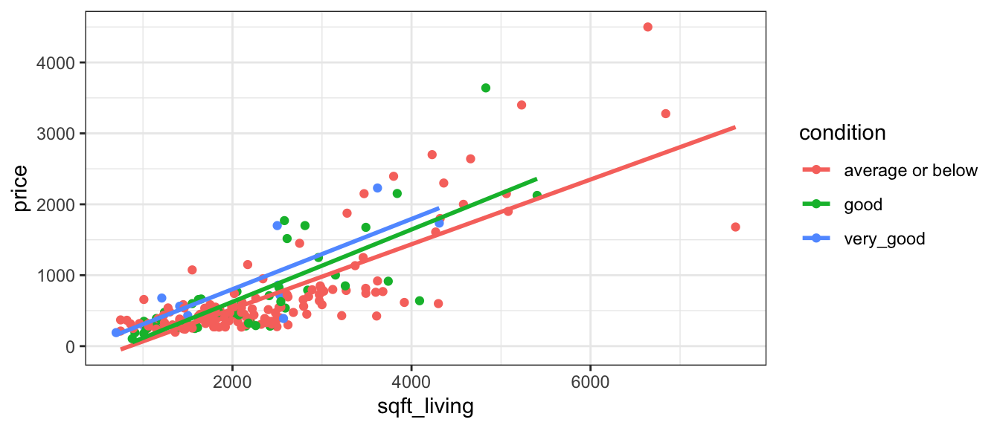
summary(lm(data=Houses, price ~ condition * sqft_living))
Call:
lm(formula = price ~ condition * sqft_living, data = Houses)
Residuals:
Min 1Q Median 3Q Max
-1408.93 -217.83 -32.08 163.77 1858.38
Coefficients:
Estimate Std. Error t value
(Intercept) -389.16787 77.15235 -5.044
conditiongood -5.07017 163.36630 -0.031
conditionvery_good 202.14373 292.59452 0.691
sqft_living 0.45644 0.02913 15.671
conditiongood:sqft_living 0.05326 0.06607 0.806
conditionvery_good:sqft_living 0.03863 0.12017 0.321
Pr(>|t|)
(Intercept) 0.00000104 ***
conditiongood 0.975
conditionvery_good 0.490
sqft_living < 0.0000000000000002 ***
conditiongood:sqft_living 0.421
conditionvery_good:sqft_living 0.748
---
Signif. codes: 0 '***' 0.001 '**' 0.01 '*' 0.05 '.' 0.1 ' ' 1
Residual standard error: 414.3 on 194 degrees of freedom
Multiple R-squared: 0.6367, Adjusted R-squared: 0.6273
F-statistic: 67.99 on 5 and 194 DF, p-value: < 0.000000000000000225.4.7 Interaction vs Correlation
It is easy to confuse the concept of interaction with that of correlation. These are, in fact, very different concepts.
A correlation between two variables means that as one increases, the other is more likely to increase or decrease. We only use the word correlation to describe two quantitative variables, but we could discuss the similar notion of a relationship between categorical variables.
An interaction between two explanatory variables means that the effect of one on the response depends on the other.
Examples of Correlations (or relationships)
Houses on the waterfront tend to be bigger than houses not on the waterfront, so there is a relationship between square feet and waterfront status.
Houses with large amounts of living space in square feet are likely to have more bedrooms, so there is a correlation between living space and bedrooms.
Suppose that some genres of movies (drama, comedy, action, etc.) tend to be longer than others. This is an example of a relationship between genre and length.
The fact that there is a correlation between explanatory variables is NOT a reason to add an interaction term involving those variables in a model. Correlation is something entirely different than interaction!
Examples of Interactions
As houses on the waterfront increase in size, their price increases more rapidly than for houses not on the waterfront. This means there is an interaction between size and waterfront location.
Suppose that the effect of additional bedrooms on price is different for houses with lots of living space than for houses with little living space. This would be an example of an interaction between living space and number of bedrooms.
Suppose that audiences become more favorable to dramas as they get longer, but less favorable to comedies as they get longer. In this scenario, the effect of movie length on audience rating depends on the genre of the movie, indicating an interaction between length and genre.
5.5 Building a Model for Interpretation
So far, we’ve dealt with models with 2 or fewer variables. Some real questions require accounting for more than two variables. In these situations, we’ll need to develop a model that is complex enough to capture the important aspects of the mechanism we’re modeling, but also simple enough for us to be able to explain and interpret. We’ll need to decide how many variables to include in the model, and whether to use transformations, or to include interaction terms.
We’ll examine strategies for modeling in two different contexts. In this chapter, we’ll focus on building models for situations when we want to make interpretations and draw conclusions about relationships between variables. In Chapter 7, we focus on modeling solely for the purpose of prediction, when we are not interested in making interpretations or conclusions about relationships between variables.
We’ll need to think about things like:
- which explanatory variables should we include in the model, and how many?
- should we include any interaction terms?
- should we use any nonlinear terms?
- should we use a transformation of the response variable?
In this section we’ll go through a set of steps to build a model that will help us understand factors that contribute to the price of a car.
5.5.1 Exploratory Data Analysis
The Cars2020 dataset from the Lock5Data R package contains several variables with information pertaining to the price of a new 2020 car. These include:
Make
Manufacturer(e.g. Chevrolet, Toyota, etc.)
Model- Car model (e.g. Impala, Highlander, …)
Type- Vehicle category (Hatchback, Minivan, Sedan, Sporty, SUV, or Wagon)
Price- Lowest MSRP (in $1,000)
CityMPG- City miles per gallon (EPA)
HwyMPG- Highway miles per gallon (EPA)
Seating- Seating capacity
Drive- Type of drive (AWD, FWD, or RWD)
Acc030- Time (in seconds) to go from 0 to 30 mph
Acc060- Time (in seconds) to go from 0 to 60 mph
QtrMile- Time (in seconds) to go 1/4 mile
Braking- Distance to stop from 60 mph (dry pavement)
FuelCap- Fuel capacity (in gallons)
Length- Length (in inches)
Width- Width (in inches)
Height- Height (in inches)
Wheelbase- Wheelbase (in inches)
UTurn- Diameter (in feet) needed for a U-turn
Weight- Curb weight (in pounds)
Size- Large, Midsized, or Small
We’ll start by creating some graphs and tables to explore the data.
We’ll look at a summary of the categorical variables in the dataset.
Cars_Cat <- select_if(Cars2020, is.factor)
summary(Cars_Cat) Make Model Type Drive Size
Chevrolet: 8 3 : 1 Hatchback: 4 AWD:80 Large :21
Toyoto : 7 3 Series: 1 Minivan : 4 FWD:25 Midsized:41
Audi : 6 300 : 1 Sedan :38 RWD: 5 Small :48
Hyundai : 6 4Runner : 1 Sporty :11
Nissan : 6 5 series: 1 SUV :50
BMW : 5 500L : 1 Wagon : 3
(Other) :72 (Other) :104 We examine the correlation matrix and plot of quantitative variables.
Cars_Num <- select_if(Cars2020, is.numeric)
C <- cor(Cars_Num, use = "pairwise.complete.obs")
round(C,2) Price Acc060 CityMPG HwyMPG Seating Acc030 QtrMile Braking FuelCap
Price 1.00 -0.66 -0.48 -0.47 0.16 -0.66 -0.67 -0.02 0.57
Acc060 -0.66 1.00 0.52 0.45 0.02 0.95 0.98 0.27 -0.50
CityMPG -0.48 0.52 1.00 0.88 -0.58 0.52 0.49 -0.22 -0.84
HwyMPG -0.47 0.45 0.88 1.00 -0.52 0.48 0.43 -0.19 -0.78
Seating 0.16 0.02 -0.58 -0.52 1.00 0.01 0.07 0.63 0.64
Acc030 -0.66 0.95 0.52 0.48 0.01 1.00 0.95 0.26 -0.51
QtrMile -0.67 0.98 0.49 0.43 0.07 0.95 1.00 0.34 -0.46
Braking -0.02 0.27 -0.22 -0.19 0.63 0.26 0.34 1.00 0.35
FuelCap 0.57 -0.50 -0.84 -0.78 0.64 -0.51 -0.46 0.35 1.00
Length 0.45 -0.48 -0.69 -0.52 0.63 -0.43 -0.43 0.41 0.81
Width 0.50 -0.49 -0.78 -0.73 0.63 -0.47 -0.44 0.28 0.80
Height 0.12 0.09 -0.60 -0.65 0.81 0.06 0.16 0.63 0.63
Wheelbase 0.43 -0.43 -0.69 -0.55 0.62 -0.39 -0.39 0.44 0.80
UTurn 0.51 -0.47 -0.79 -0.69 0.61 -0.42 -0.41 0.35 0.81
Weight 0.58 -0.45 -0.86 -0.82 0.72 -0.46 -0.41 0.44 0.92
LogPrice 0.96 -0.72 -0.62 -0.58 0.23 -0.72 -0.71 0.01 0.67
Length Width Height Wheelbase UTurn Weight LogPrice
Price 0.45 0.50 0.12 0.43 0.51 0.58 0.96
Acc060 -0.48 -0.49 0.09 -0.43 -0.47 -0.45 -0.72
CityMPG -0.69 -0.78 -0.60 -0.69 -0.79 -0.86 -0.62
HwyMPG -0.52 -0.73 -0.65 -0.55 -0.69 -0.82 -0.58
Seating 0.63 0.63 0.81 0.62 0.61 0.72 0.23
Acc030 -0.43 -0.47 0.06 -0.39 -0.42 -0.46 -0.72
QtrMile -0.43 -0.44 0.16 -0.39 -0.41 -0.41 -0.71
Braking 0.41 0.28 0.63 0.44 0.35 0.44 0.01
FuelCap 0.81 0.80 0.63 0.80 0.81 0.92 0.67
Length 1.00 0.73 0.46 0.92 0.81 0.79 0.54
Width 0.73 1.00 0.64 0.75 0.76 0.86 0.64
Height 0.46 0.64 1.00 0.48 0.58 0.72 0.21
Wheelbase 0.92 0.75 0.48 1.00 0.82 0.82 0.53
UTurn 0.81 0.76 0.58 0.82 1.00 0.84 0.62
Weight 0.79 0.86 0.72 0.82 0.84 1.00 0.69
LogPrice 0.54 0.64 0.21 0.53 0.62 0.69 1.00library(corrplot)
C <- corrplot(C)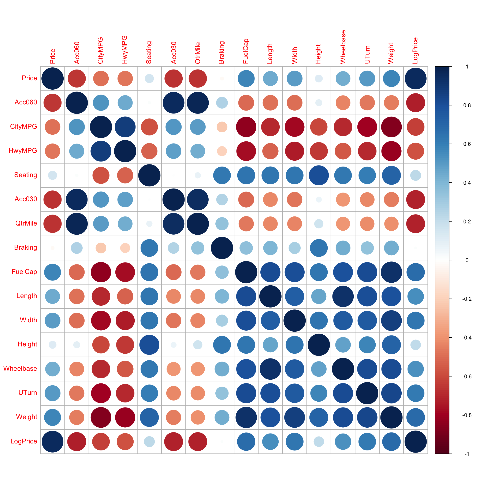
We see there is strong correlation between many of the variables. We’ll want to include variables that are highly correlated with price in the model. At the same time, we’ll see that including too many explanatory variables, especially when they are highly correlated, makes the model hard to interpret. We’ll need to carefully select explanatory variables that help us answer the questions we’re most interested in.
So far, we’ve explored the relationship between price and acceleration time. We found that modeling log(Price) as a function of acceleration time was more consistent with regression model assumptions than modeling price itself, so we’ll start there.
M_Cars1 <- lm(data=Cars2020, log(Price) ~ Acc060)
summary(M_Cars1)
Call:
lm(formula = log(Price) ~ Acc060, data = Cars2020)
Residuals:
Min 1Q Median 3Q Max
-0.90992 -0.19686 0.00148 0.15566 0.63774
Coefficients:
Estimate Std. Error t value Pr(>|t|)
(Intercept) 5.00390 0.14547 34.40 <0.0000000000000002 ***
Acc060 -0.19889 0.01821 -10.92 <0.0000000000000002 ***
---
Signif. codes: 0 '***' 0.001 '**' 0.01 '*' 0.05 '.' 0.1 ' ' 1
Residual standard error: 0.298 on 108 degrees of freedom
Multiple R-squared: 0.5248, Adjusted R-squared: 0.5204
F-statistic: 119.3 on 1 and 108 DF, p-value: < 0.00000000000000022We see that just over 50% of the total variability in log(Price) is explained by acceleration time alone. Let’s investigate what other variables we should add to the model to better understand the factors contributing to the price of a car.
Along the way, we’ll discover some statistical considerations we should think about when building models.
5.5.2 Simpson’s Paradox
Let’s next investigate the effect of a car’s gas mileage on price. There are two gas mileage variables in the dataset, CityMPG and HwyMPG. We’ll use HwyMPG, which is the number of miles the car can go on one mile of gas when driving on the highway. We’ll also account for the weight of the car in lbs. The plot below shows the relationships between each of these variables with log(Price), as well as the relationship between Weight and Hwy MPG.
P1 <- ggplot(data=Cars2020, aes(x=HwyMPG, y=log(Price))) + geom_point() + stat_smooth(method="lm", se=FALSE) + theme_bw()
P2 <- ggplot(data=Cars2020, aes(x=HwyMPG, y=log(Price))) + geom_point() + stat_smooth(method="lm", se=FALSE) + theme_bw()
P3 <- ggplot(data=Cars2020, aes(x=Weight, y=HwyMPG)) + geom_point() + stat_smooth(method="lm", se=FALSE) + theme_bw()
grid.arrange(P1, P2, P3, ncol=3)
We see that both highway MPG and weight are negatively associated with price, and that there is also a negative relationship between weight and highway MPG.
Let’s add highway gas mileage to our model, along with acceleration time.
M_Cars2 <- lm(data=Cars2020, log(Price) ~ Acc060 + HwyMPG)
summary(M_Cars2)
Call:
lm(formula = log(Price) ~ Acc060 + HwyMPG, data = Cars2020)
Residuals:
Min 1Q Median 3Q Max
-0.88944 -0.14122 -0.00675 0.15266 0.64910
Coefficients:
Estimate Std. Error t value Pr(>|t|)
(Intercept) 5.339932 0.151927 35.148 < 0.0000000000000002 ***
Acc060 -0.160005 0.018699 -8.557 0.0000000000000918 ***
HwyMPG -0.018843 0.004075 -4.624 0.0000105782710393 ***
---
Signif. codes: 0 '***' 0.001 '**' 0.01 '*' 0.05 '.' 0.1 ' ' 1
Residual standard error: 0.2733 on 107 degrees of freedom
Multiple R-squared: 0.604, Adjusted R-squared: 0.5966
F-statistic: 81.59 on 2 and 107 DF, p-value: < 0.00000000000000022As the plot showed, highway MPG has a negative coefficient. Assuming acceleration time is held constant, price is expected to multiply by a factor of \(e^{-0.02} =0.98\), a 2 percent decrease.
It may be surprising to learn that cars that get better gas mileage tend to be less expensive than those with lower gas mileage. We see in the summary output that the p-value associated with HwyMPG is small, indicating a statistically discernible relationship.
We’ve learned, however, that when something seems unusual, we should think deeper. We noticed that highway gas mileage was negativly associated with weight, and that both are negatively associated with price. Since heaviest cars tend to also be the most expensive, it may be that cars that get better gas mileage are less expensive because they they are smaller and weigh less.
In the figure below we break the cars into three categories, based on their weight.
Light = less than 3,500 lbs.
Medium = between 3,500 and 4,500 lbs.
Heavy = heavier than 4,500 lbs.
Cars2020 <- mutate(Cars2020, Weight_Group = cut(Weight,
breaks=c(0, 3500, 4500, 6500),
labels=c("Light Weight", "Medium Weight", "Heavy Weight")))
ggplot(data=Cars2020, aes( y=Price, x=HwyMPG )) +geom_point() + facet_wrap(facets = ~Weight_Group) +
stat_smooth(method="lm", se=FALSE) + xlab("Highway MPG") + theme_bw()
Once we compare cars of similar weights, we see that there is little to no relationship between highway MPG and price. The negative trend for low weight cars is due primarily to one outlier, while the other two weights show slightly positive to no trend. This is different than the strong negative relationship we saw in the previous graph.
Let’s add weight to the model and see what happens to to estimate associated with highway MPG.
M_Cars3 <- lm(data=Cars2020, log(Price) ~ Acc060 + HwyMPG + Weight)
summary(M_Cars3)
Call:
lm(formula = log(Price) ~ Acc060 + HwyMPG + Weight, data = Cars2020)
Residuals:
Min 1Q Median 3Q Max
-0.65689 -0.16159 -0.01278 0.13494 0.91927
Coefficients:
Estimate Std. Error t value Pr(>|t|)
(Intercept) 3.40468799 0.37981919 8.964 0.0000000000000120 ***
Acc060 -0.14489669 0.01683344 -8.608 0.0000000000000751 ***
HwyMPG 0.00500984 0.00567833 0.882 0.38
Weight 0.00025961 0.00004763 5.451 0.0000003294667341 ***
---
Signif. codes: 0 '***' 0.001 '**' 0.01 '*' 0.05 '.' 0.1 ' ' 1
Residual standard error: 0.2427 on 106 degrees of freedom
Multiple R-squared: 0.6907, Adjusted R-squared: 0.6819
F-statistic: 78.89 on 3 and 106 DF, p-value: < 0.00000000000000022Notice that when weight is added to the model, the coefficient on HwyMPG changes signs and is now positive. This means that assuming we are comparing cars of the same acceleration time and weight, one with higher highway gas mileage is expected to cost more than one with lower gas mileage. The difference is small, with price expected to multiply by about \(e^{0.01} =1.01\) (a -0.5022407) percent increase), and not statistically discernible (high p-value). So, there really doesn’t appear to be much of a relationship at all between price and gas mileage, after accounting for acceleration time and weight.
Still, this is a different conclusion than we would have drawn if we had not accounted for weight in the model. It had originally appeared that highway MPG had a strong negative association with price, but we see that once we compare cars of similar weights, there is little to no relationship between price and highway MPG. This is an example of a phenomenon know as Simpson’s Paradox. In instances of Simpson’s Paradox, the relationship between two variables changes directions, or disappears once a third variable is accounted for. The weight variable is called a confounding variable. If we don’t account for weight, we get a misleading picture of the relationship between highway gas mileage and price.
We saw that accounting for weight helps us better understand the relationship between price and gas mileage. We should also discuss the relationship between price and weight itself. Since weights of cars range from 2,000 to 6,000 lbs, it would be silly to talk about the effect of a single additional pound. Rather, let’s examine the effect of a 1,000 pound increase on price of a car. For each additional 1,000 lbs., price is expected to multiply by a factor of \(e^{0.00026 \times 1000} =1000.259645\), a 29.6426102 percent increase.
Our model with weight and highway gas mileage, in addition to acceleration time, now explains about 69.0673511 percent of the variability in log(Price), up from 52.4840462 for the model with only acceleration time.
We saw in the preceding graph, that the direction of the relationship between price and gas mileage was negative for light weight cars and positive for medium weight ones, suggesting a possible interaction between weight and gas mileage. So, we might consider adding an interaction term to the model. The : command adds just the interaction term.
M_Cars4 <- lm(data=Cars2020, log(Price) ~ Acc060 + HwyMPG + Weight + HwyMPG:Weight)
summary(M_Cars4)
Call:
lm(formula = log(Price) ~ Acc060 + HwyMPG + Weight + HwyMPG:Weight,
data = Cars2020)
Residuals:
Min 1Q Median 3Q Max
-0.63443 -0.14677 -0.01321 0.13097 0.94847
Coefficients:
Estimate Std. Error t value Pr(>|t|)
(Intercept) 3.879767385 0.490968739 7.902 0.00000000000286 ***
Acc060 -0.135947988 0.017745763 -7.661 0.00000000000960 ***
HwyMPG -0.014894324 0.014310665 -1.041 0.300
Weight 0.000095708 0.000118187 0.810 0.420
HwyMPG:Weight 0.000006049 0.000003997 1.514 0.133
---
Signif. codes: 0 '***' 0.001 '**' 0.01 '*' 0.05 '.' 0.1 ' ' 1
Residual standard error: 0.2412 on 105 degrees of freedom
Multiple R-squared: 0.6973, Adjusted R-squared: 0.6857
F-statistic: 60.46 on 4 and 105 DF, p-value: < 0.00000000000000022The coefficient estimate on the interaction term is small and the p-value is large, telling us we don’t have much evidence of an interaction between weight and MPG. Also notice that \(R^2\) barely changed, moving from 0.691 to 0.697 when the interaction term is included. Since interactions make the model harder to interpret, we shouldn’t include one unless we have good reason to. So, in this case, we’ll stick with the simpler model with no interaction term.
5.5.3 Multicollinearity
Let’s continue to add variables to our model that might help us learn about factors affecting the price of a car. Another variable in the dataset was the amount of time it takes a car to drive a quarter mile. We’ll add that variable to the model.
M_Cars5 <- lm(data=Cars2020, log(Price) ~ Acc060 + HwyMPG + Weight + QtrMile)
summary(M_Cars5)
Call:
lm(formula = log(Price) ~ Acc060 + HwyMPG + Weight + QtrMile,
data = Cars2020)
Residuals:
Min 1Q Median 3Q Max
-0.73603 -0.15035 -0.00338 0.12601 0.83499
Coefficients:
Estimate Std. Error t value Pr(>|t|)
(Intercept) 4.9556985 0.8375191 5.917 0.0000000415 ***
Acc060 -0.0001390 0.0718750 -0.002 0.9985
HwyMPG 0.0067463 0.0056549 1.193 0.2356
Weight 0.0002825 0.0000482 5.862 0.0000000534 ***
QtrMile -0.1766120 0.0853267 -2.070 0.0409 *
---
Signif. codes: 0 '***' 0.001 '**' 0.01 '*' 0.05 '.' 0.1 ' ' 1
Residual standard error: 0.239 on 105 degrees of freedom
Multiple R-squared: 0.7028, Adjusted R-squared: 0.6915
F-statistic: 62.07 on 4 and 105 DF, p-value: < 0.00000000000000022The coefficient estimate for QtrMile time is negative , which is not surprising. We would expect cars that take longer to drive a quarter mile to be less expensive. But, look at what happened to the Acc060 variable. The estimate now is very slightly negative (a change from Model M_Cars4), but the most striking change is in the standard error column. The standard error associated with the Acc060 variable increased from 0.017 to 0.072, (more than 4 times larger). This has a big impact on the t-statistic, p-value, and confidence intervals associated with Acc060. Since standard errors are used to calculate confidence intervals, it will impact these as well.
Confidence Interval for Acceleration Time - Model without Quarter Mile Time
exp(confint(M_Cars3, level=0.95, parm="Acc060")) |> round(2) 2.5 % 97.5 %
Acc060 0.84 0.89We are 95% confident that a 1-second increase in acceleration time is associated with an average price decrease between 11 and 16 percent, assuming weight and highway gas mileage are held constant.
Confidence Interval for Acceleration Time - Model with Quarter Mile Time
exp(confint(M_Cars5, level=0.95, parm="Acc060")) |> round(2) 2.5 % 97.5 %
Acc060 0.87 1.15We are 95% confident that a 1-second increase in acceleration time is associated with an average price change between a 13 decrease and a 15 percent increase, assuming weight, highway gas mileage, and quarter mile time are held constant.
Notice how the second interval is so much wider than the first that it is practically useless. It tells us almost nothing about the relationship between price and acceleration time. This happens because quarter mile time is strongly correlated with Acc060. Recall their correlation was 0.98. When we add an explanatory variable that is highly correlated with a variable already in the model, the model will be unable to separate the effect of one variable from the effect of the other, causing it to yield high standard errors, reflecting lots of uncertainty about the effect of both variables. Further, recall that interpreting one variable in a multiple regression model requires assuming all others are held constant. But, if a can accelerate faster, it will most surely be able to drive a quarter mile more quickly, so it doesn’t make sense to talk about increasing acceleration time while holding quarter mile time constant.
Key Point: Stong correlation between explanatory variables in a model is bad. This is called multicollinearity. When building a model, avoid including strongly correlated explanatory variables. Pick the one you think is most relevant and draw conclusions based on it. Generally, explanatory variables with correlation above 0.8 probably shouldn’t be included in the same model. If you are unsure whether multicollinearity will be a problem, you could look at how standard error on one variable changes when a second variable is added to the model. If standard error for the first variable increases then we should be cautious about adding the second variable. (Note: Correlation between the explanatory and response variables is not a problem. It’s generally a good thing because it means our model will be able to make more accurate predictions.)
Impact of Multicollinearity on Prediction
We’ve seen that multicollinearity can have a substantial affect on confidence intervals for regression coefficients \(b_j\). Let’s see how multicollinearity affects predicted values.
Suppose we want to predict the price of a car that can accelerate from 0 to 60 mph in 9.5 seconds, weighs 4000 lbs, gets 25 mpg on the highway, and completes a quarter mile in 17.5 seconds.
Prediction interval based on Model without Quarter Mile Time:
exp(predict(M_Cars3, newdata = data.frame(Acc060=9.5,
Weight = 4000, HwyMPG = 25,
QtrMile=17.3), level=0.95,
interval="prediction")) fit lwr upr
1 24.33366 14.79947 40.01001Prediction interval based on Model with Quarter Mile Time:
exp(predict(M_Cars5, newdata = data.frame(Acc060=9.5,
Weight = 4000,
HwyMPG = 25,
QtrMile=17.3),
level=0.95, interval="prediction")) fit lwr upr
1 24.47924 14.99922 39.95096We see that the predicted values and intervals are nearly identical. While multicollinearity has a severe impact on confidence intervals for model estimates, it does not affect predictions or prediction intervals.
5.5.4 Model Comparison Tests
Next, we’ll consider adding categorical explanatory variables Size, and Drive. The plot shows the relationship between each of these variables and price.
P1 <- ggplot(data=Cars2020, aes(x=log(Price), y=Size)) + geom_boxplot() + ggtitle("Price by Size")
P2 <- ggplot(data=Cars2020, aes(x=log(Price), y=Drive)) + geom_boxplot() + ggtitle("Price by Drive")
grid.arrange(P1, P2, ncol=2)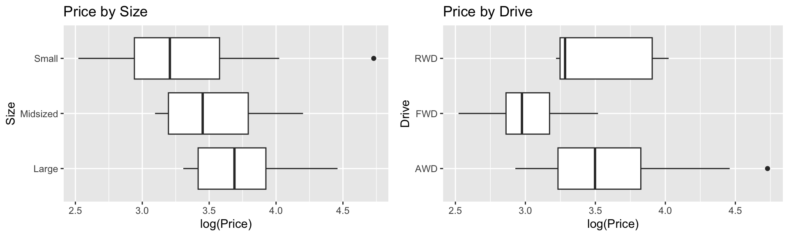
We’ve already included information about size, through the weight variable, so we won’t Size it too. Let’s add drive type to the model.
M_Cars6 <- lm(data=Cars2020, log(Price) ~ Acc060 + HwyMPG + Weight + Drive)
summary(M_Cars6)
Call:
lm(formula = log(Price) ~ Acc060 + HwyMPG + Weight + Drive, data = Cars2020)
Residuals:
Min 1Q Median 3Q Max
-0.52142 -0.12972 -0.00994 0.13284 0.85043
Coefficients:
Estimate Std. Error t value Pr(>|t|)
(Intercept) 3.43598628 0.41499637 8.280 0.00000000000045 ***
Acc060 -0.14665443 0.01848492 -7.934 0.00000000000257 ***
HwyMPG 0.00895120 0.00586769 1.526 0.13017
Weight 0.00023446 0.00004935 4.751 0.00000651159314 ***
DriveFWD -0.19735323 0.06537983 -3.019 0.00319 **
DriveRWD -0.20279168 0.12475953 -1.625 0.10709
---
Signif. codes: 0 '***' 0.001 '**' 0.01 '*' 0.05 '.' 0.1 ' ' 1
Residual standard error: 0.2325 on 104 degrees of freedom
Multiple R-squared: 0.7215, Adjusted R-squared: 0.7081
F-statistic: 53.89 on 5 and 104 DF, p-value: < 0.00000000000000022The baseline category for drive is AWD (all wheel drive). We see that FWD (front wheel) and RWD (rear wheel) both have negative estimates, indicating cars of these drive types tend to be less expensive than all wheel drive cars. Because the sample size for RWD cars is very small (only 5 cars), the difference between rear and all wheel drive cars is not statistically discernible, but the difference between FWD and AWD (which is roughly the same size), is statistically discernible.
We can use an ANOVA F-test to see if there is evidence of a relationship between price and drive type overall. We’ll compare the model that includes acceleration time, weight, and gas mileage, but not drive type (M_Cars3) to a model that includes these variables plus drive type (M_Cars6) .
anova(M_Cars3, M_Cars6)Analysis of Variance Table
Model 1: log(Price) ~ Acc060 + HwyMPG + Weight
Model 2: log(Price) ~ Acc060 + HwyMPG + Weight + Drive
Res.Df RSS Df Sum of Sq F Pr(>F)
1 106 6.2444
2 104 5.6216 2 0.62282 5.7611 0.004238 **
---
Signif. codes: 0 '***' 0.001 '**' 0.01 '*' 0.05 '.' 0.1 ' ' 1The large F-statistic and small p-value provides evidence of a relationship between price and drive type after accounting for the other variables, suggesting we should add drive type to the model. We found evidence of differences in price between front-wheel drive and rear-wheel drive, compared to all wheel drive cars. Adding drive type to the model results in a modest increase in \(R^2\), as the model now explains about 72.2 percent of the variability in Log(Price).
Model comparison tests can be helpful in deciding whether variables should be added to a model. We should keep in mind that when sample size is very large, even very small differences will return statistically discernible differences using the F-test, so we should also consider factors like \(R^2\), the size of our estimate(s) \(b_j\), background knowledge, and the variable’s relevance to our research question, when deciding whether or not to add it to a model.
5.5.5 Checking Model Assumptions
We could keep looking at other variables to add, but at this point, we have a model that gives us a good sense of the factors related to price of a car, capturing 72 of total variability in car price, and is still easy to interpret. Furthermore, other variables that are correlated with price (such as fuel capacity, length, width, wheelbase, and UTurn diameter) are highly correlated with variables already in the model. Adding them to the model will do little to explain variability in price, and could create problems associated with multicollinearilty. For our research purposes, our model is good enough.
We’ll use residuals to check the model assumptions.
Residual by Predicted Plot, Histogram of Residuals, and Normal Quantile-Quantile Plot
resid_panel(M_Cars6, smoother=TRUE)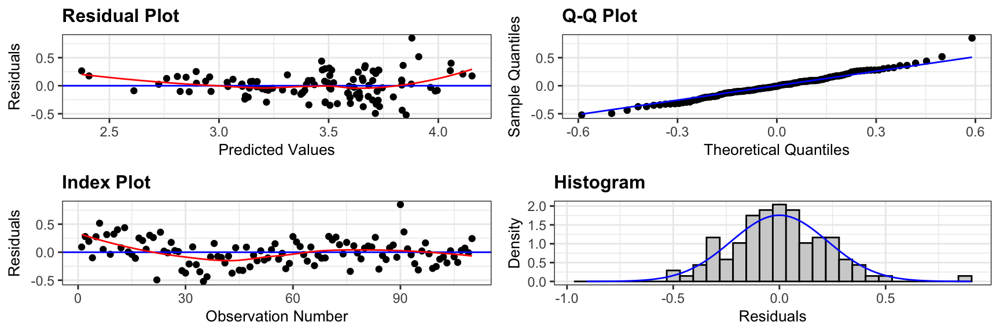
There is slight concern about constant variance, but otherwise, the model assumptions look good.
Residual by Predictor Plots
resid_xpanel(M_Cars6, smoother=TRUE)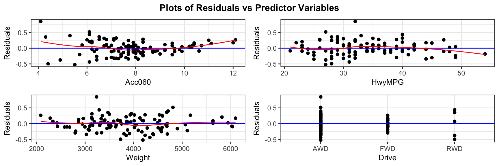
These plots don’t raise any concerns.
5.5.6 Interpretations
The model coefficients are shown below.
M_Cars6$coefficients |> round(3)(Intercept) Acc060 HwyMPG Weight DriveFWD DriveRWD
3.436 -0.147 0.009 0.000 -0.197 -0.203 Since we used a log transformation, we should interpret \(e^{b_j}\) rather than \(b_j\) itself.
exp(M_Cars6$coefficients) |> round(4)(Intercept) Acc060 HwyMPG Weight DriveFWD DriveRWD
31.0620 0.8636 1.0090 1.0002 0.8209 0.8164 The intercept theoretically tells us that a car that accelerates from 0 to 60 mph in no time, gets 0 mpg, weighs 0 lbs, and is AWD would be expected to cost 31.062, 0.8636, 1.009, 1.0002, 0.8209, 0.8164 thousand dollars. This statement is nonsensical and we shouldn’t try to interpret the intercept.
The price of a car is expected to decrease by 14 percent for each additional second it takes to accelerate from 0 to 60 mph, assumping highway MPG, weight and type of drive are held constant.
The price of a car is expected to increase by 0.9 percent for each additional highway MPG, assumping acceleration time, weight and type of drive are held constant.
The price of a car is expected to increase by 0.023 percent for each additional pound in weight, assumping acceleration time, highway MPG, and type of drive are held constant. This is equivalent to a 23 percent increase for each additional 1,000 pounds in weight.
FWD cars are expected to cost 18 less than AWD cars, assuming acceleration time, highway MPG, and weight are held constant.
RWD cars are expected to cost 18 less than AWD cars, assuming acceleration time, highway MPG, and weight are held constant.
Referring back to the model summary output, we saw that the effects associated with acceleration time, weight and the difference between FWD and AWD were statistically discernible, while the effect of highway MPG and the difference between RWD and AWD are not.
5.5.7 Predictions
We’ll use our model to estimate the average price with the following characteristics, and also to predict the price of a new car with the given characteristics.
newcar <- data.frame(Acc060 = 8, Weight=3000, HwyMPG = 30, Drive = "AWD")This is an interval for log(Price).
predict(M_Cars6, newdata=newcar, interval="confidence", level=0.95) fit lwr upr
1 3.234658 3.100603 3.368712Exponentiating, we obtain
exp(predict(M_Cars6, newdata=newcar, interval="confidence", level=0.95)) fit lwr upr
1 25.39768 22.21135 29.0411We are 95% confident that the average price of all new 2020 cars that weigh 3000 lbs, take 8 seconds to accelerate from 0 to 60 mph, weigh 3,000 lbs, and have all wheel drive will cost between 22 and 29 thousand dollars.
Next, we calculate a prediction interval for an individual car with these characteristics.
exp(predict(M_Cars6, newdata=newcar, interval="prediction", level=0.95)) fit lwr upr
1 25.39768 15.71348 41.05023We are 95% confident that the price of an individual car that weighs 3000 lbs, takes 8 seconds to accelerate from 0 to 60 mph, weighs 3,000 lbs, and has all wheel drive will cost between 16 and 41 thousand dollars.
5.5.8 Model Building Summary
Consider the following when building a model for the purpose of interpreting parameters and understanding and drawing conclusions about a population or process.
Characteristics of a good model:
- Model driven by research question
- Include variables of interest
- Include potential confounding variables
- Avoid including highly correlated explanatory variables
- Avoid messy transformations and interactions where possible
- Use residual plots to assess appropriateness of model assumptions
- Aim for high \(R^2\) but not highest
- Aim for model complex enough to capture nature of data, but simple enough to give clear interpretations
Keep in mind, there is no single correct model, but there are common characteristics of a good model. While two statisticians might use different models for a given set of data, they will hopefully lead to reasonably similar conclusions if constructed carefully.
5.2.7 Comments on Transformations
Violations of model assumptions often come from right skewness, which is especially common in economic and financial data. Log transformations are often helpful in fitting models to such data. Log models are also easily interpretable, allowing us to interpret estimates as percent change.
We could have used another transformation, such as \(\sqrt{\text{Price}}\), and in some cases, other transformations might better correct for violations of model assumptions. That said, other transformations are harder to interpret than the log transformation. It is important to think about both the appropriateness of our model assumptions as well as how easily we will be able to interpret and explain our conclusions when choosing a transformation.
In this section, we looked at a transformation involving a single quantitative explanatory variable.
If the explanatory variable is categorical:
When working with multiple regression models, it is still important to mention holding other variables constant when interpreting parameters associated with one of the variables.